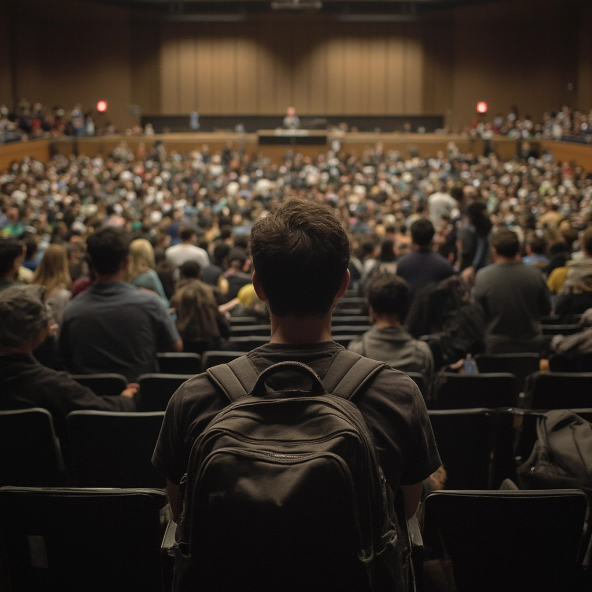

Ende des Abiturs
Die letzten Tage vor den Abiturprüfungen fühlten sich an wie ein
Countdown zum Ende der Welt. Wochenlang hatte ich mich in meinem
Zimmer verschanzt, umgeben von Stapeln aus Notizen, Lehrbüchern und
leeren Energydrink-Dosen. Meine Eltern versuchten vergeblich, mich zum
Essen zu bewegen, doch die Angst vor dem Versagen war stärker als mein
Hunger. "Du schaffst das", sagten alle um mich herum, aber ihre Worte
prallten ab an der Mauer aus Zweifel, die ich um mich errichtet hatte.
Als ich den Prüfungsraum betrat, zitterten meine Hände so stark, dass
ich kaum den Stift halten konnte. Die Gesichter meiner Mitschüler
waren verzerrt vor Konzentration, während der Lehrer die
Aufgabenblätter verteilte. Die Uhr an der Wand tickte unerbittlich,
jede Sekunde ein kleiner Tod für meine Nerven. Doch irgendwie flossen
die Worte aus meinem Stift, als hätte mein Unterbewusstsein all die
Informationen gespeichert, die ich verzweifelt versucht hatte
einzuprägen.
Der Tag, an dem die Ergebnisse kamen, veränderte alles. Mit zitternden
Fingern öffnete ich den Umschlag – und da war es: Ein
Notendurchschnitt, der mir alle Türen öffnen würde. Die Tränen, die
ich monatelang zurückgehalten hatte, brachen aus mir heraus. Auf der
Abschlussfeier standen wir alle im Kreis, die Arme umeinander gelegt,
und schworen uns ewige Freundschaft. Damals wussten wir nicht, wie
schnell diese Versprechen verblassen würden, wenn jeder seinen eigenen
Weg geht. Das Ende meiner Schulzeit fühlte sich an wie das Ende einer
Ära – und wie der Anfang von etwas Ungewissem, das gleichermaßen
beängstigend und aufregend war.
Kurz vor dem Studium
Die Sommermonate zwischen Abitur und Studienbeginn dehnten sich wie
Kaugummi. Während meine Freunde in ferne Länder reisten oder erste
Praktika absolvierten, saß ich vor dem Computer und starrte auf die
Bestätigungsmail meiner Wunschuniversität. Medizin - der Traum meiner
Eltern, der langsam auch zu meinem geworden war. Die Wohnungssuche in
der fremden Stadt gestaltete sich als Albtraum aus überteuerten
Zimmern und verzweifelten Massenbesichtigungen. Mit jedem
gescheiterten Versuch wuchs die Panik in mir.
Zwei Wochen vor Semesterbeginn fand ich endlich ein winziges Zimmer in
einer Wohngemeinschaft am Stadtrand. Meine Mutter weinte, als wir
meine wenigen Habseligkeiten in das Auto packten. "Du wirst uns
fehlen", sagte sie leise, während mein Vater schweigend das Lenkrad
umklammerte. Die Fahrt zur Universität glich einer Beerdigung –
niemand sprach, während draußen die Landschaft vorbeizog.
Das Abschiednehmen war schlimmer als erwartet. Als meine Eltern
schließlich fuhren, stand ich allein auf dem Gehweg vor meinem neuen
Zuhause, umgeben von Kartons und mit einem Schlüssel, der sich fremd
in meiner Hand anfühlte. In dieser Nacht lag ich wach in einem fremden
Bett, lauschte den unbekannten Geräuschen des Hauses und fragte mich,
ob ich die richtige Entscheidung getroffen hatte. Die Vorfreude auf
das Studium mischte sich mit einer erdrückenden Angst vor dem
Unbekannten. Morgen würde ein neues Kapitel beginnen, und ich fühlte
mich alles andere als bereit dafür.
Anfang des Studiums
Der erste Tag an der Universität war wie ein Sprung ins kalte Wasser.
Hunderte von Studierenden drängten sich in den überfüllten Hörsaal,
während der Professor monoton die Grundlagen der Anatomie erläuterte.
Ich kritzelte verzweifelt mit, versuchte jedes Wort festzuhalten,
während um mich herum alle so selbstsicher wirkten. In der Pause stand
ich allein am Rand, beobachtete, wie sich Grüppchen bildeten und
wieder auflösten. Eine blonde Studentin lächelte mich kurz an, bevor
sie in der Menge verschwand – eine flüchtige Verbindung in einem Meer
aus Fremden.
Die ersten Wochen verschwammen zu einem Wirbel aus Vorlesungen,
Seminaren und endlosen Lernstunden in der Bibliothek. Mein Zimmer in
der WG wurde kaum mehr als ein Ort zum Schlafen. Die Berge an
Lernstoff türmten sich vor mir auf wie eine unüberwindbare Wand. Jeder
Tag begann früher und endete später, während ich versuchte, nicht
unterzugehen. Meine Mitbewohner luden mich zu Partys ein, doch ich
lehnte ab – zu groß war die Angst, den Anschluss zu verlieren.
Der erste Test kam schneller als erwartet. Ich hatte tagelang kaum
geschlafen, meine Augen brannten vom stundenlangen Starren auf Bücher
und Bildschirme. Als die Aufgabenblätter verteilt wurden, begann mein
Herz zu rasen. Die Fragen schienen aus einem anderen Universum zu
stammen als das, was ich gelernt hatte. Als ich nach zwei Stunden
meinen Stift niederlegte, wusste ich, dass es nicht gereicht hatte.
Eine Woche später wurde die Liste mit den Ergebnissen ausgehängt –
mein Name stand im unteren Drittel. Die Enttäuschung war wie ein
Schlag in die Magengrube. War ich nicht gut genug für diesen Traum?
Die Zweifel begannen langsam an mir zu nagen, während ich nachts wach
lag und an die Decke starrte.

Anfang der Zweifel
Mit jedem Tag wurde die Last schwerer. Meine Kommilitonen schienen
mühelos durch die Prüfungen zu gleiten, während ich für jede
bestandene Klausur kämpfen musste. Die Anrufe bei meinen Eltern wurden
seltener – ich konnte die Enttäuschung in ihren Stimmen nicht
ertragen, wenn ich von meinen Schwierigkeiten erzählte. "Du schaffst
das schon", sagten sie immer wieder, doch ihre Worte klangen hohl in
meinen Ohren. Nachts schreckte ich aus Alpträumen hoch, in denen ich
in einem endlosen Labyrinth aus Prüfungsräumen gefangen war.
In der Mensa traf ich eines Tages auf Thomas, einen Mitstudenten aus
meinem Anatomiekurs. "Du siehst fertig aus", bemerkte er, während er
sich ungefragt zu mir setzte. Sein offenes Lächeln durchbrach für
einen Moment die Mauer, die ich um mich errichtet hatte. "Ich glaube,
ich bin im falschen Studium", gestand ich leise, die Worte schmerzten
in meinem Hals. Thomas nickte nur. "Weißt du, die Hälfte von uns denkt
das. Die andere Hälfte lügt." Wir begannen, uns regelmäßig zum Lernen
zu treffen, und zum ersten Mal seit Monaten fühlte ich mich nicht mehr
so allein.
Doch der kurze Aufschwung währte nicht lange. Die
Semesterabschlussprüfungen standen vor der Tür, und der Druck wurde
unerträglich. Ich schlief kaum noch, ernährte mich von Kaffee und
Fertiggerichten. Meine Haut wurde fahl, dunkle Ringe zeichneten sich
unter meinen Augen ab. Als ich eines Morgens aufwachte und feststellen
musste, dass ich den Wecker überhört und eine wichtige Vorlesung
verpasst hatte, brach etwas in mir. Ich setzte mich auf den Boden
meines Zimmers und weinte, bis keine Tränen mehr kamen. War das
wirklich der Weg, den ich gehen wollte? Der Zweifel war nicht länger
ein flüchtiger Gedanke – er war zu meinem ständigen Begleiter
geworden.
Noch mehr Zweifel
Das zweite Semester begann, und mit ihm kam die Erkenntnis, dass mein
Körper und Geist nicht mehr mitmachen wollten. Ich hatte die Prüfungen
mit Ach und Krach bestanden, doch der Preis dafür war hoch. An manchen
Tagen konnte ich mich kaum aus dem Bett quälen, die Erschöpfung saß in
meinen Knochen wie Blei. Thomas bemerkte die Veränderung. "Du musst
etwas ändern", sagte er eines Tages direkt. "So kannst du nicht
weitermachen."
In einer schlaflosen Nacht begann ich, im Internet nach Alternativen
zu suchen. Andere Studiengänge, Ausbildungen, Auslandsaufenthalte –
alles schien plötzlich möglich und gleichzeitig unerreichbar. Der
Gedanke, meinen Eltern zu gestehen, dass ich aufgeben wollte, ließ
mich erschaudern. Waren die ganzen Opfer umsonst gewesen? Die
Nachrichten von ehemaligen Schulfreunden, die in ihren Studiengängen
aufblühten, stachen wie Nadeln in mein Selbstwertgefühl.
Ein Gespräch mit der Studienberatung brachte keine Erleichterung.
"Viele Studierende durchleben Krisen", erklärte die Beraterin
sachlich. "Geben Sie sich Zeit." Doch Zeit war genau das, was ich
nicht mehr hatte. Meine Ersparnisse schwanden, und der Gedanke an
weitere Jahre dieses Kampfes ließ mich innerlich erstarren. Als ich
nach dem Gespräch durch den Campus lief, blieb ich vor dem schwarzen
Brett stehen. Ein bunter Flyer fiel mir ins Auge: "Auslandssemester in
Stockholm – Bewerbungsfrist in zwei Wochen".
Ich fotografierte den Flyer mit zitternden Händen. Vielleicht war das
die Auszeit, die ich brauchte – ein Tapetenwechsel, um zu mir selbst
zu finden. Oder war es nur eine weitere Flucht vor der Realität? Die
Gedanken kreisten in meinem Kopf, während ich langsam zurück zu meinem
Zimmer ging. Auf halbem Weg klingelte mein Telefon. Es war mein Vater.
"Wie läuft das Studium?", fragte er hoffnungsvoll. Ich schluckte
schwer, bevor ich antwortete: "Darüber müssen wir reden..." Der Moment
der Wahrheit war gekommen, und ich wusste nicht, ob ich stark genug
war, mich ihm zu stellen.
Die harte Wahrheit über das Medieninformatikstudium
Als ich mich für Medieninformatik einschrieb, hatte ich glänzende
Augen und einen Kopf voller Träume. "Kreative Problemlösung",
"Digitale Zukunftsgestaltung" und "Praxisnahe Ausbildung" - so klangen
die Hochglanzprospekte. Nun, im vierten Semester, habe ich
beschlossen, eine kleine Realitätsbilanz zu ziehen. Für alle, die sich
fragen, wie es wirklich ist, Medieninformatik zu studieren - hier ist
meine ungeschönte Wahrheitstabelle. Links steht, was mir versprochen
wurde. Rechts die bittere Realität. Und dazwischen? Nur die
zersplitterten Reste meiner Seele und die Lügen, die ich meinen
Freunden erzähle, um nicht völlig verzweifelt zu wirken.
Reality-Check-Tabelle
| Was mir versprochen wurde |
Was tatsächlich passiert ist |
Meine innere Reaktion |
Was ich meinen Freunden erzähle |
| "Kreative App-Entwicklung" |
3 Uhr morgens, Bug #457 debuggen |
Innerlich weinend |
"Ich erschaffe die digitale Zukunft!" |
| "Spannendes Campusleben" |
Allein in der Bibliothek, Tag 23 |
"Ist das hier ein Gefängnis?" |
"Mein Netzwerk wächst enorm!" |
| "Praxisnahe Projektarbeit" |
Gruppen-Chaos, niemand macht was |
"Ich hasse Menschen." |
"Teamarbeit bereitet mich perfekt vor!" |
| "Gefragte Fachkräfte" |
Stellenanzeige: "5 Jahre Erfahrung, Entry Level" |
Hysterisches Lachen |
"Die Firmen reißen sich um uns!" |
| "Work-Life-Balance" |
Was ist Schlaf? Was ist Leben? |
"Existiere ich überhaupt noch?" |
"Ich optimiere meine Produktivität!" |
Teile deine Erfahrungen
Hast du ähnliche Erfahrungen im Studium gemacht? Oder läuft bei dir
alles anders? Teile deine Geschichte mit mir: